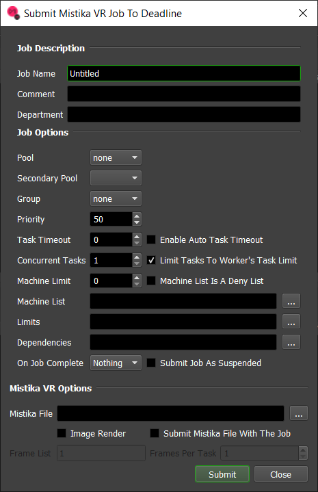
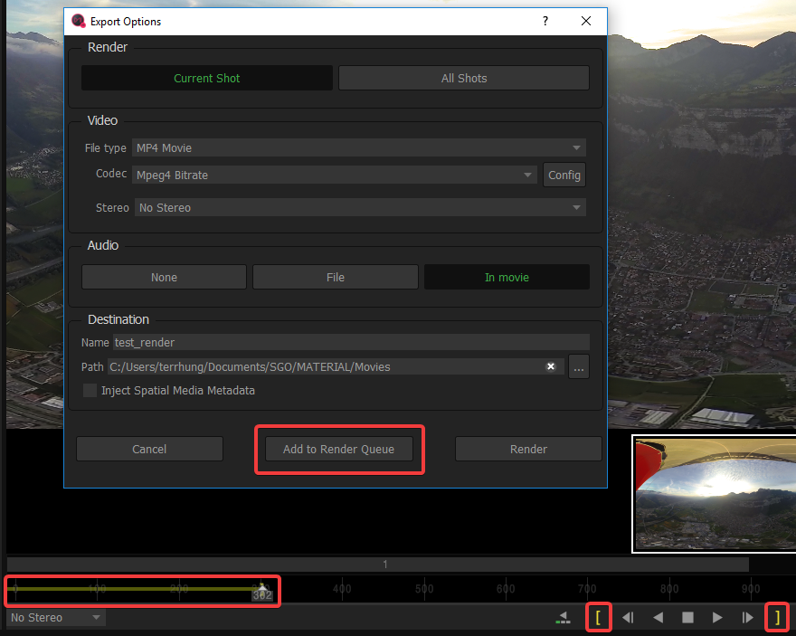
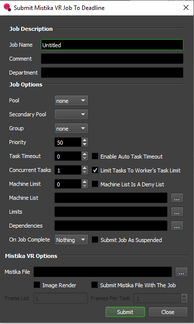
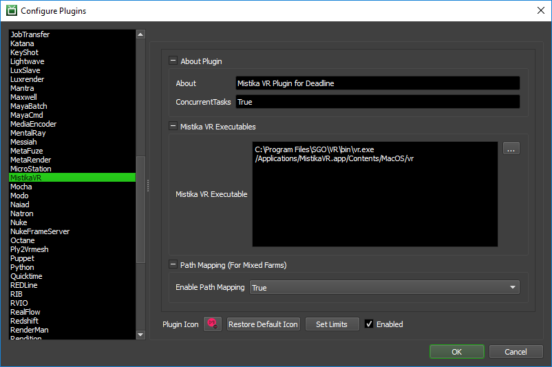

Mistika VR¶
Job Submission¶
You can submit Mistika VR jobs from within Mistika VR by configuring the commands file or from the Monitor, and process them on either Windows or macOS.
To submit from within Mistika VR, define the frame range you want to render using the yellow bars, then select ‘File’ -> ‘Render’, configure your options and click ‘Add to Render Queue’.
 Submission Options¶
The general Deadline options are explained in the Job Submission documentation.
The Mistika VR specific options are:
Mistika File: The Mistika
.rndfile to be rendered.Image Render: Check this box if the Mistika file to be rendered corresponds to an image sequence render. If submitting through Mistika VR, the value of this box will automatically be set.
Submit Mistika File With The Job: If this option is enabled, the Mistika render file will be submitted with the job, and then copied locally to the Worker machine during rendering.
Frame List: The list of frames to render. Only available when rendering an image sequence. The frames should be within the range specified in Mistika VR if rendering an image sequence.
Frames Per Task: This is the number of frames that will be rendered at a time for each job task. Only available when rendering an image sequence.
Plugin Configuration¶
You can configure the Mistika VR plugin settings from the Monitor. While in power user mode, select Tools -> Configure Plugins and select the MistikaVR plugin from the list on the left.
Mistika VR Executables
Mistika VR Executable: The path to the Mistika VR executable. Enter alternative paths on separate lines.
Path Mapping (For Mixed Farms)
Enable Path Mapping: If enabled, a temporary Mistika VR file will be created locally on the Worker for rendering because Deadline does the path mapping directly in the Mistika VR file. This feature can be turned off if there are no Path Mapping entries defined in the Repository Options.
Integrated Submission Script Setup¶
The following procedures describe how to install the integrated Mistika VR submission script. This script allows for submitting Mistika VR render jobs to Deadline directly from within the Mistika VR editing GUI. The script has been tested with Mistika VR version 8.8.3 and later.
Manual Installation¶
The installation of the integrated submitter involves writing shell commands in a file runBatch.cfg that gets executed by Mistika VR. A template of this file can be generated by clicking on the ‘Add to Render Queue’ button in Mistika VR for the first time, then clicking ‘Edit commands file’. Alternatively, you can create a blank file named runBatch.cfg in the correct folder, depending on which operating system you are using.
Windows
On Windows, the cfg file is located at C:\ProgramData\SGO\VR-ENV\runBatch.cfg. Add the following line to the file:
"[Deadline Install Directory]\bin\deadlinecommand.exe" -executescript "[Repository]\scripts\Submission\MistikaVRSubmission.py" {$runBatchPathRnd} $runBatchRndName $runBatchRange $runBatchDevice {$runBatchPathMedia}
where
[Deadline Install Directory] is the folder where Deadline was installed, such as C:\Program Files\Thinkbox\Deadline<VERSION>
[Repository] is your Deadline Repository 10 path, such as C:\DeadlineRepository<VERSION>
macOS
On macOS, the cfg file is located at /Users/Shared/SGO/VR-ENV/runBatch.cfg. Add the following line to the file:
[Deadline Install Directory]/DeadlineCommand10.app/Contents/MacOS/DeadlineCommand10 -executescript [Repository]/scripts/Submission/MistikaVRSubmission.py {$runBatchPathRnd} $runBatchRndName $runBatchRange $runBatchDevice {$runBatchPathMedia}
where
[Deadline Install Directory] is the folder where Deadline was installed, such as /Applications/Thinkbox/Deadline<VERSION>
[Repository] is the Deadline Repository 10 path, such as /Applications/Thinkbox/DeadlineRepository<VERSION>
Note
<VERSION> is the Deadline major version such as: 10.
Verify Installation¶
Open Mistika VR and click on ‘File’ -> ‘Render’ -> ‘Add to Render Queue’. A Deadline submitter should pop up. If it does not appear, there may be another command in runBatch.cfg interfering with the Deadline command.
FAQ¶
What versions of Mistika VR are supported?
Deadline supports version 8.8 and upwards.
Can I submit and process on different platforms?
Yes. We support path mapping of the input
.rndfile and its contents. Ensure you configure Path Mapping in the Repository configuration.
What is this Image Render box in the submitter for?
The
.rndfile does not give us enough information to determine whether or not an image sequence is being rendered, so you would have to check it yourself if submitting through Deadline Monitor. If submitting through Mistika VR, we have the information required to automatically check that box.
My video renders are showing up as 1 frame in the Deadline Monitor. Is this normal?
Yes, this is expected behaviour.
Error Messages and Meanings¶
This is a collection of known Mistika VR error messages and their meanings, as well as possible solutions. We want to keep this list as up to date as possible, so if you run into an error message that isn’t listed here, please visit the Thinkbox Help Centre and let us know.
Detected a render error: [Start frame is lesser than clip boundary]
Detected a render error: [End frame is greather than clip boundary]
The frame range specified in the Deadline submitter is outside of the frame range specified by the yellow bars inside Mistika VR at the time the
.rndfile was generated. Either generate a new file with a larger range inside Mistika VR, or decrease the range when submitting the job through the Deadline submitter.

{kind=link}
{kind=link}
{kind=link}
{kind=link}